Entrega el mismo día
Repartimos a domicilio, tanatorios e iglesias en Córdoba.
Envíos Interflora
Flores a cualquier ciudad de España y del mundo.
Habla con nosotros
957 470 818 · WhatsApp 616 524 337
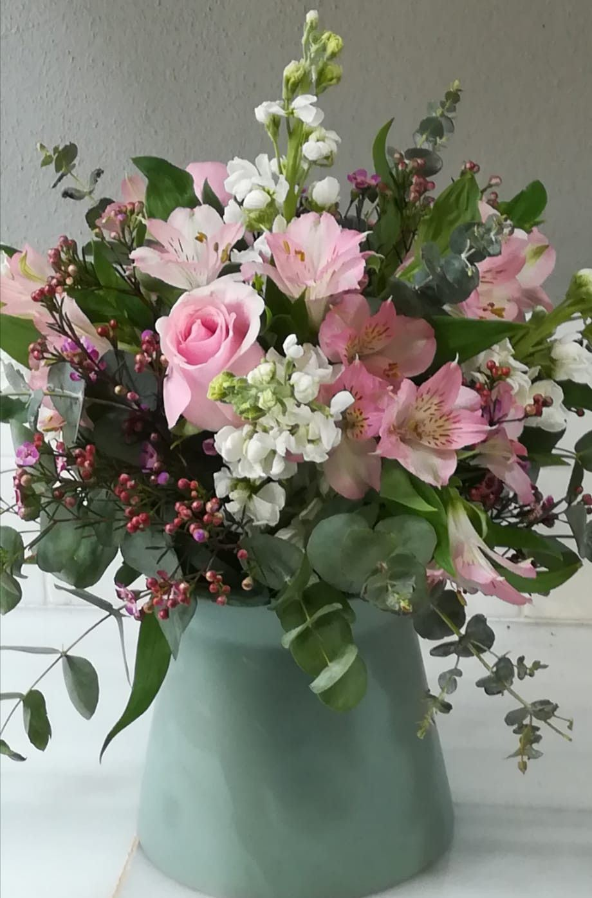
Ramos y flores frescas Flor de España, Holanda y Colombia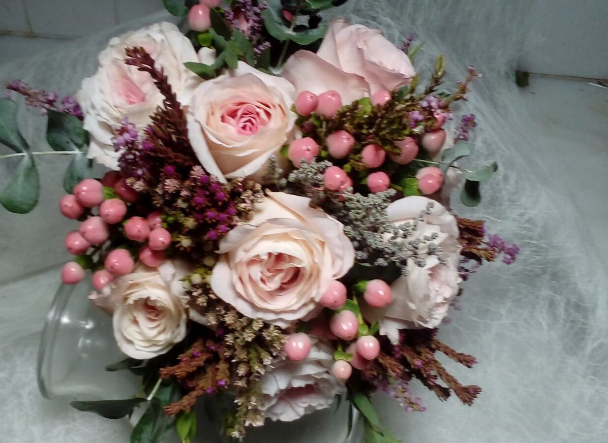
Bodas Ramos de novia, iglesia y celebración Eventos y Semana Santa Congresos, hermandades y empresas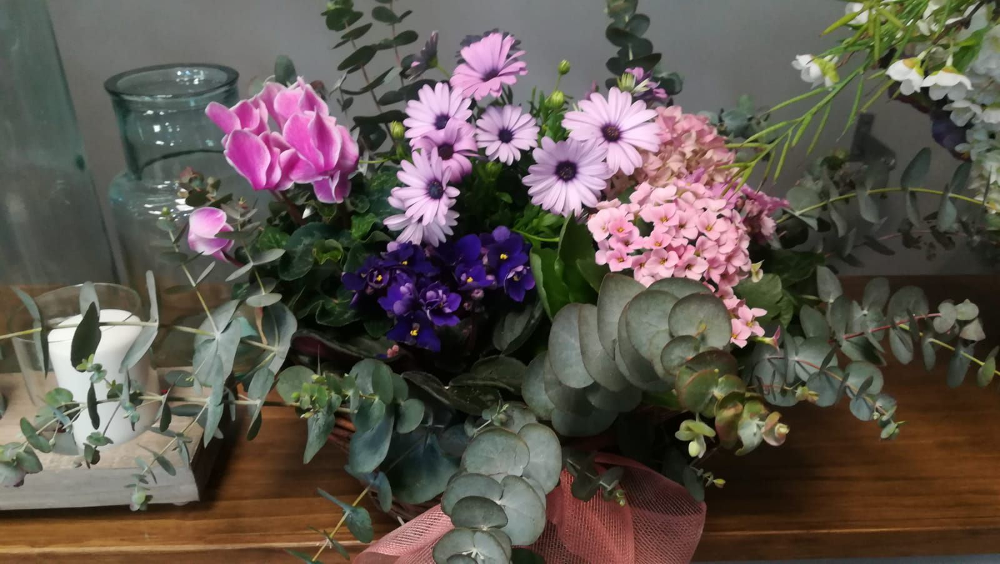
Plantas Orquídeas, cestas y plantas para regalar Condolencias Coronas, cojines y centros al tanatorioPara todas las ocasiones
Elige la ocasión y escríbenos. Te proponemos un ramo a tu gusto y presupuesto.
Cómo hacer tu encargo
Sin formularios ni registros: hablas directamente con la floristería.
-
Escríbenos o llama
Por WhatsApp al 616 524 337 o al 957 470 818. Si tienes una foto de referencia, mándanosla.
-
Te aconsejamos
Dinos la ocasión, tu presupuesto, el día y el mensaje de la tarjeta. Te proponemos el ramo.
-
Lo preparamos y lo llevamos
Recógelo en la calle Osario o te lo llevamos a domicilio en Córdoba. Fuera de Córdoba, con Interflora.
Precios orientativos
Cada encargo se hace a medida. Estos son los precios de partida.
- Ramo de floresdesde [PENDIENTE] €
- Centro de floresdesde [PENDIENTE] €
- Orquídea o plantadesde [PENDIENTE] €
- Corona o centro de condolenciadesde [PENDIENTE] €
- Ramo de noviadesde [PENDIENTE] €
Reparto a domicilio en Córdoba: [PENDIENTE: precio del reparto]. Pregúntanos sin compromiso.
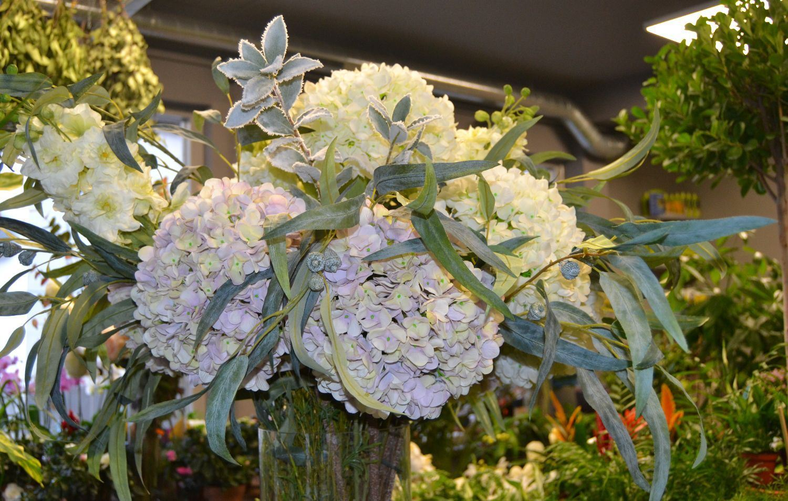
Nuestra tienda de flores
Tres generaciones dedicadas al arte floral en Córdoba.
Santa Marta Floristas nació hace más de 70 años de la mano de Juan José Prieto Iglesias y su hijo Rafael, en la calle Jesús María. Más tarde nos trasladamos a la calle Osario, 20, donde hoy sigue la tienda de la mano de Gloria, hija de Rafael.
Seguimos haciendo lo mismo que el primer día: escoger flor de calidad, aconsejar a cada cliente y cuidar cada encargo como si fuera el único.
Conocer nuestra historiaDesde nuestro taller
¿Te gusta alguno? Mándanos la foto y te preparamos uno parecido.
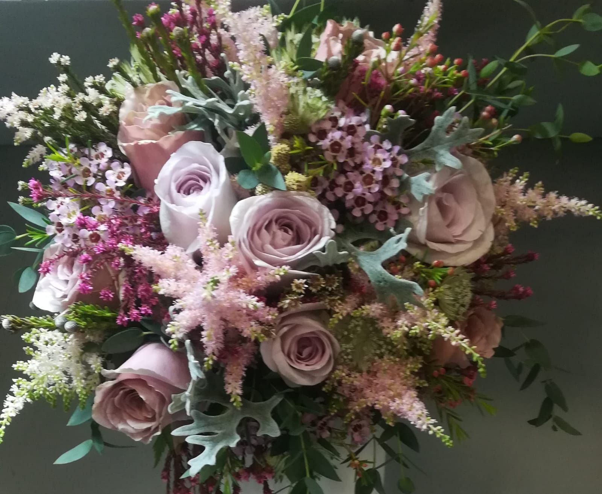
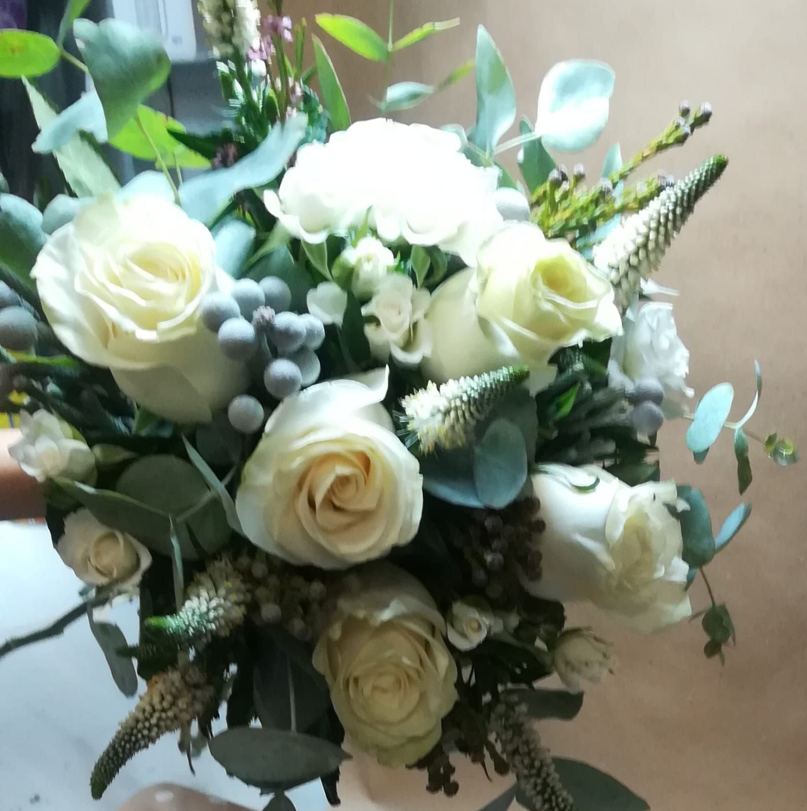
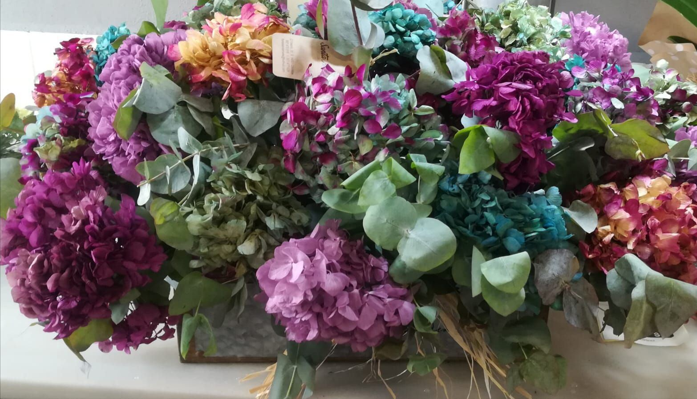
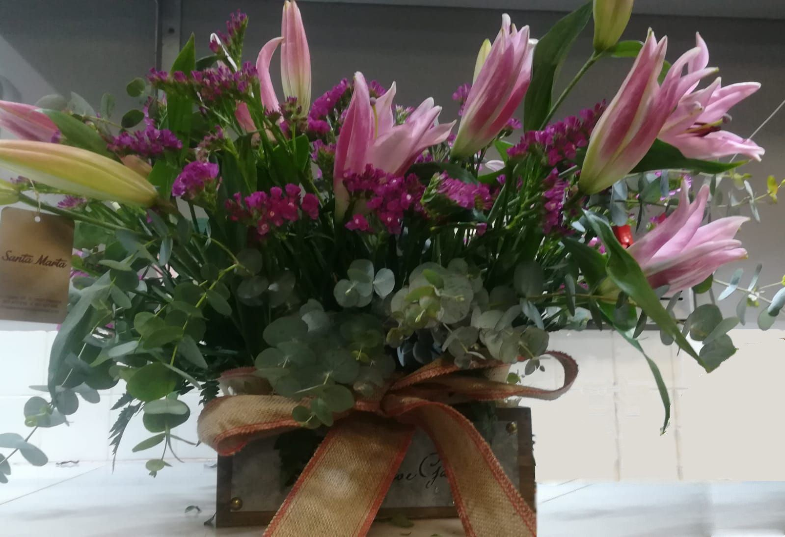
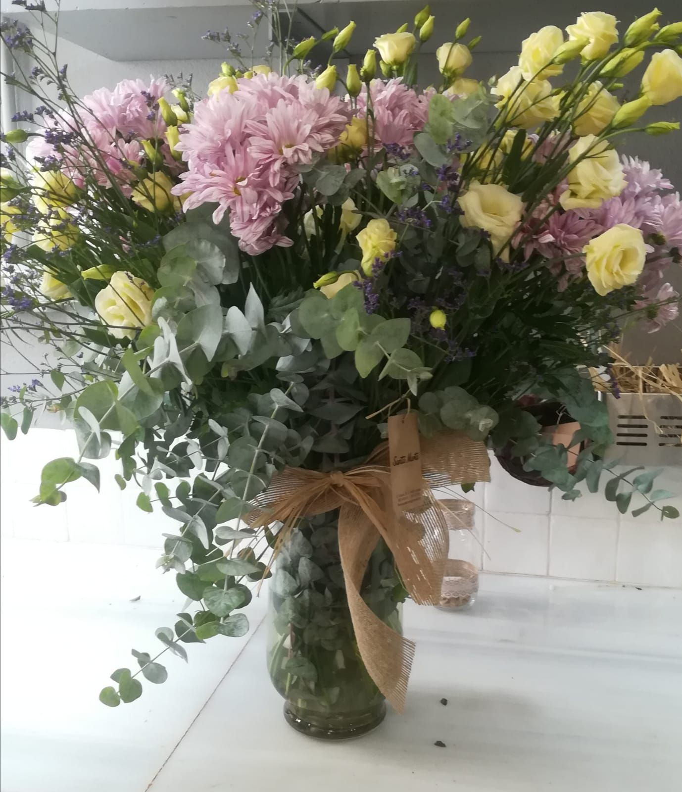
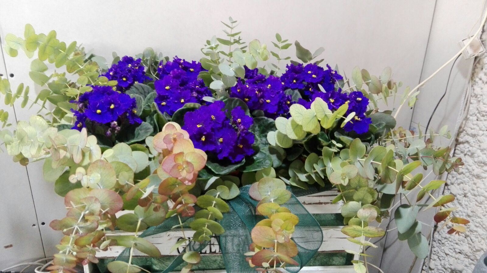
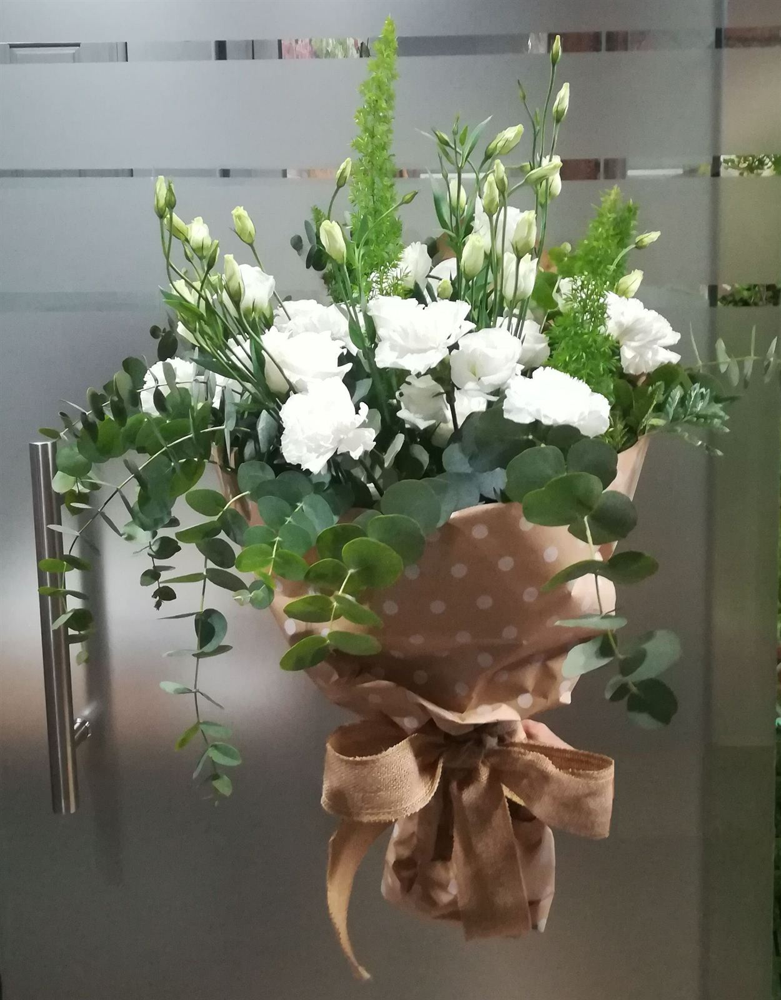
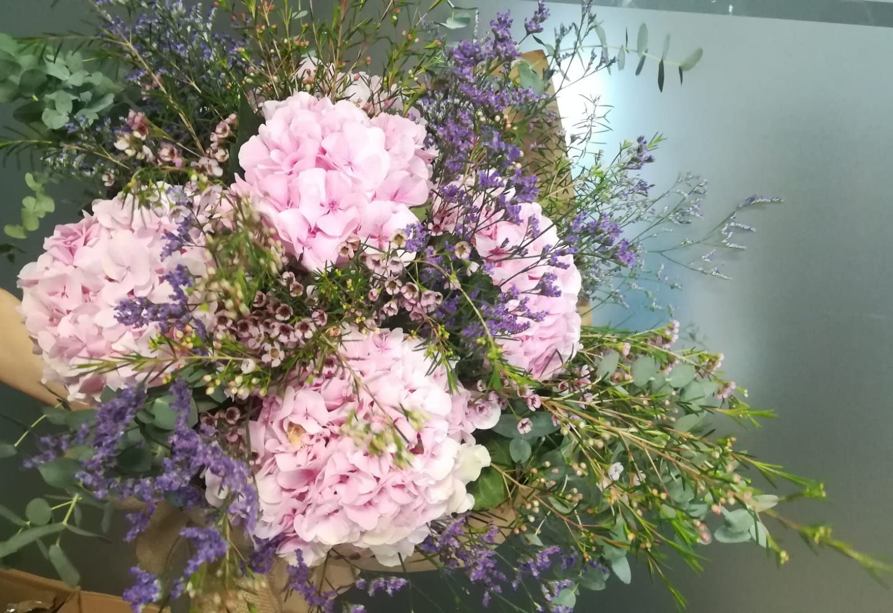
Nos eligen
- Cabildo Catedral de Córdoba
- Universidad de Córdoba
- Universidad Loyola
- EMACSA
- FEPAMIC
- Hotel Palacio del Bailío
- Hotel Córdoba Center
- Tanatorios de Córdoba
Lo que dicen nuestros clientes
Lee las opiniones de quienes ya nos han encargado flores, y si has sido cliente, cuéntanos qué te pareció.
Habla con nosotros
Calle Osario, 20 · 14001 Córdoba
- Teléfono
- 957 470 818 · 957 477 928
- 616 524 337
- floressantamarta@hotmail.com
- Horario
- [PENDIENTE: confirmar horario]